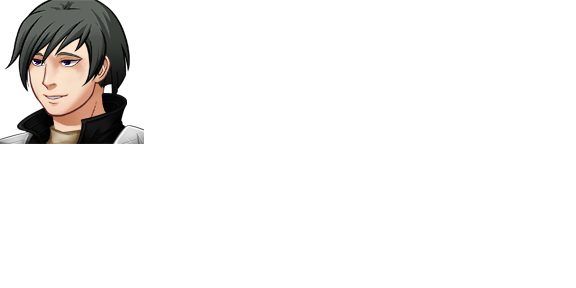

| Bizkarroi | |
 | |
| Attributes | |
| Name Meaning: | parasite |
| Unique Ability: | Unclear |
| Location: | Urrezko City |
| Role: | Roaming Boss (Chapter Seven) |
| First Appearance: | Chapter Seven |
| Typing Style: | Normal. |
| Music Theme(s): | "Battle You Should Run From", "The Parasite Fights (Round One)" |
| Details | |
| Species: | Game Character (Humanoid) |
| Gender: | Male |
| Eye Color: | Blue |
| Hair Color: | Black |
| Status: | Alive |
Bizkarroi's personality is unknown, but his few lines of dialouge are rather sinister.
Bizkarroi randomly appears to chase the player in certain places in Urrezko City in Chapter Seven.
Bizkarroi is capable of deleting a character from the battlefield. Notably there is a threshold of power level for this ability to work; it does not work on Iklusea, for example.
Bizkarroi is also capable of nullifying all clones on the battlefield.
Unknown.
| This page is in the folowing categories: Male Characters, Game Characters, Humanoid |